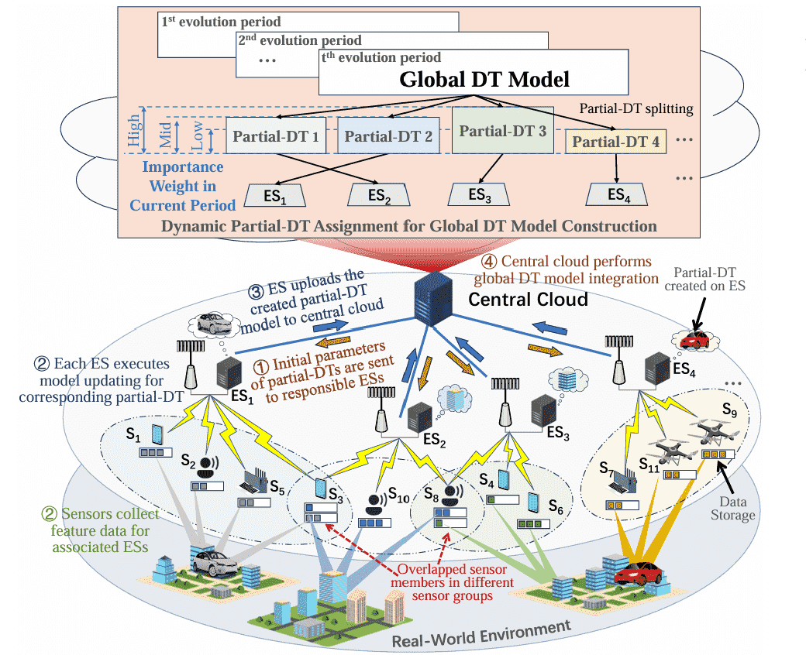

About
Publications ( / )
[INFOCOM'26] DTAS: Adaptive Model Splitting for Dynamic Digital Twin Update with Edge-Cloud Collaboration
IEEE International Conference on Computer Communications (INFOCOM), Accepted, Tokyo, Japan (CCF-A)

[TMC'25] Federated Digital Twin Construction via Wireless Sensing: A Game-Theoretic Online Optimization with Overlapping Coalitions
IEEE Transactions on Mobile Computing, vol.24, no.11, pp.12221-12238 (CCF-A, SCI-Q1 TOP)
[TWC'24] A Three-Party Hierarchical Game for Physical Layer Security Aware Wireless Communications With Dynamic Trilateral Coalitions
IEEE Transactions on Wireless Computing, vol. 23, no. 5, pp. 4815-4829 (CCF-B, SCI-Q1 TOP)
[IOTJ'25] Collision Avoidance Control for Autonomous Driving With Multiple Dynamic Obstacles in IoV: A Prediction-Enhanced APF-Based Approach
IEEE Internet of Things Journal, vol. 12, no. 13, pp. 24968-24984 (CCF-C, SCI-Q1 TOP)
[NetMag'25] Towards Intelligent Transportation with Pedestrians and Vehicles In-the-Loop: A Surveillance Video-Assisted Federated Digital Twin Framework
IEEE Network, vol. 39, no. 6, pp. 305-315 (SCI-Q3)
[TWC'25] A Repeated Coalition Formation Game for Physical Layer Security Aware Wireless Communications with Third-Party Intelligent Reflecting Surfaces
IEEE Transactions on Wireless Communications, vol. 24, no. 9, pp. 7612-7626 (CCF-B, SCI-Q1 TOP)
[TVT'25] A Hierarchical Game for Physical Layer Security Aware Cooperative Communications with Dynamic Interchangeable Relaying and Jamming
IEEE Transactions on Vehicular Technology, vol. 74, no. 1, pp. 968-983 (SCI-Q2 TOP)
[TNSE'25] Latency-Energy Aware Dynamic Application Placement for Edge Computing: A Vacation Queue Based Optimization Approach
IEEE Transactions on Network Science and Engineering, vol. 11, no. 2, pp. 2249-2263 (SCI-Q2)